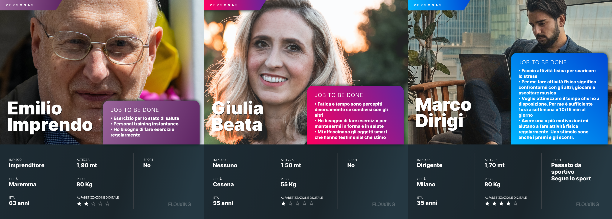
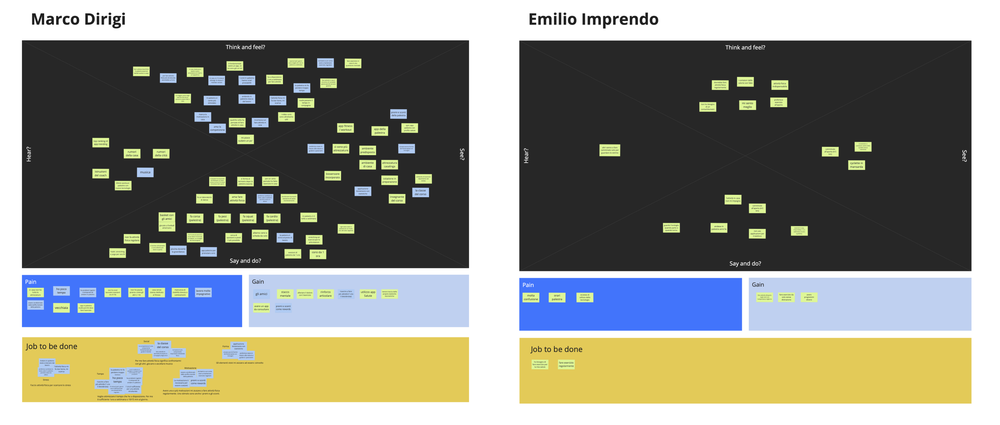
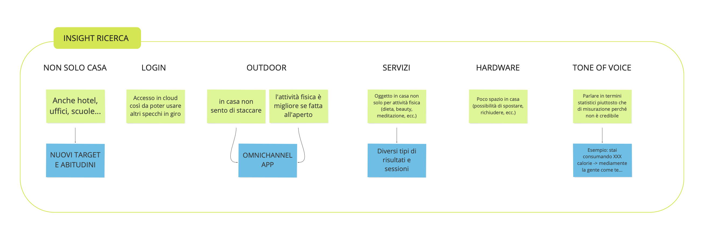
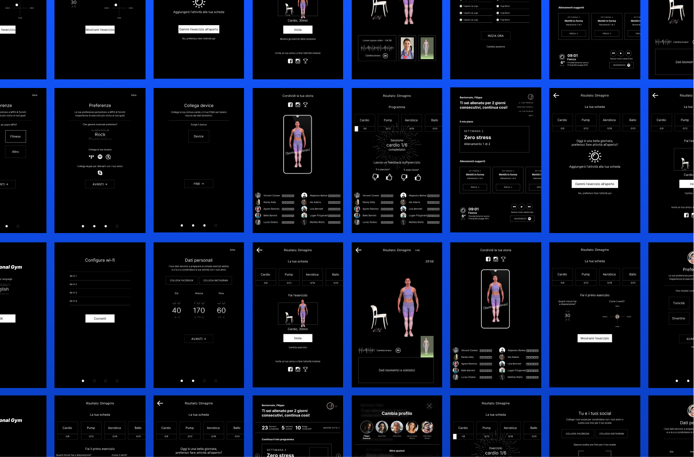
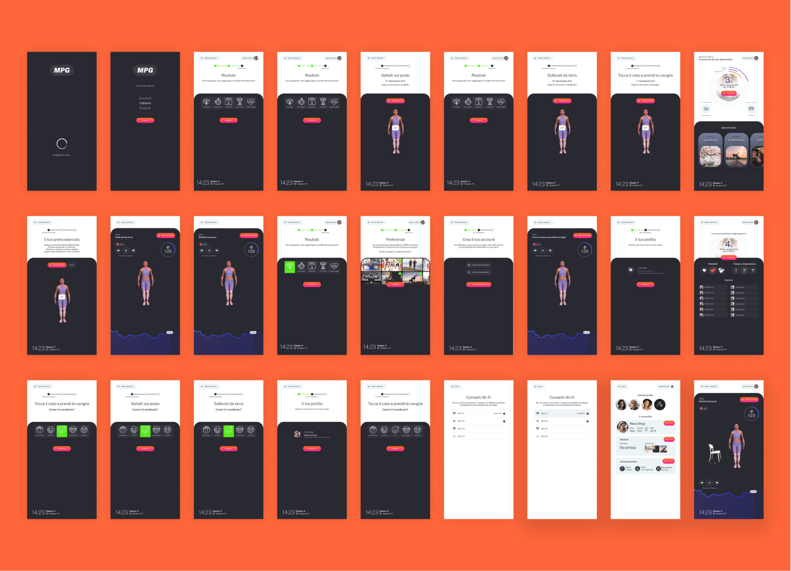

MPG is a prototype stage project of a smart mirror designed to keep fit and exercise. Thanks to a touch surface on the mirror, it is possible to access the application that we have designed and prototyped together with a product design team.
The Challenge
The client asked us (User Experience Design team) to explore the context of use and possible applications of a smart mirror, and then design and prototype to obtain project fundings.

Discovery
Through a workshop with stakeholders, we brought out the project's objectives and vision, proto-personas, and a first user journey. To do this we used the eventstorming and elevator pitch methods. We also understood how to coordinate the two teams with continuous reviews.
Competitor Analysis
Before starting gathering information with the users we explored the competitor ecosystems, in particular: smart mirrors and fitness Apps. We analyzed different aspects such as the onboarding, the equipment required, and many others. This informations have been very useful to better understand users' mental models in this field and collect new ideas to improve our prototype and software.
Personas
We started the user research with interviews: we interviewed 5/7 people for each proto-persona. We asked them specific questions to validate the assumption made into the discovery, but also explorative questions about training habits, indoor training experiences, mindfulness, and life balance.
From the interviews, we gathered information that we organized into empathy maps that helped us visualize and prioritize insights that we used to integrate the initial user journey.
 Wireframes
With what we learned from the user research we realized lo-fi wireframes. Those have been essential to validate fastly with the stakeholders a final user flow for the prototype.
UI Design
Lastly, in collaboration with the product design team, we designed the user interface of Mypersonalgym software, we explored different UI styles to understand the best aesthetics for a mirror.
